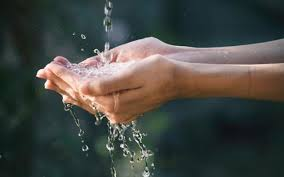

Recomendaciones
página principal
¿Cómo cuidar el agua?
Para cuidar el agua en casa y contribuir a un uso responsable, cierra la llave mientras te lavas los dientes o te enjabonas, toma duchas cortas, repara fugas y utiliza la lavadora con carga completa.
En casa
- Repara fugas
- Cierra la llave
- Duchas cortas
- Lava con cubeta
- Usa la lavadora con carga completa
- Cocina con menos agua
- Riega en horarios adecuados
- Instala dispositivos ahorradores
- Usa productos biodegradables
